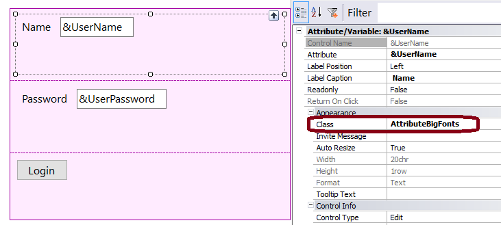

Viewport units can be used on text to automatically change the font size depending on the viewport. This could be very useful when you need to comply with Accessibility for Web Applications issues. In this example, we’ve set the font-size in vmax unit, creating the following responsive effect for the text: In GeneXus, the attribute's Class property is set to "AttributeBigFonts" class.  The AttributeBigFonts has its Label Class property set to LabelBigFonts, which is a descendant class of Textblock. The LabelBigFonts Font-Size property is set to 2vmax, as shown in the picture below.
|
| Backlinks |
| Using relative length units on the web |